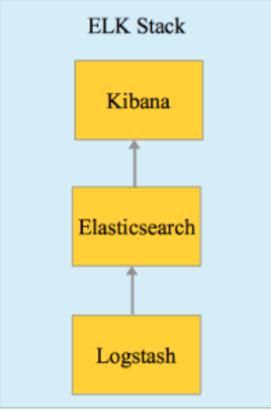

搭建ELK技术栈
ELK技术栈主要由Elasticsearch、Logstash 和 Kibana组成，分别针对解决存储（查询）、存储、可视化问题。
ELK经常用于收集和分析日志，最近自己尝试搭建了一套 "ELK+filebeat"日志系统，这里总结下经验。
Table of Contents
1 搭建与基本使用

1.1 基于Docker 搭建
ELK可以在官网分别下载 软件包运行，软件依赖jvm。或者可以使用docker来方便地部署。
我采用的是github:docker-elk 这里的docker配置, 该项目有几个分支，除了单纯elk还有配备searchguard 权限加密系统的elk、配备x-pack的elk 和结合vagrant的elk。
我使用了searchguard版的，可以看下其项目结构，还是挺清楚的，主要结构如下:
➜ tree
.
├── docker-compose.yml # docker compose 文件
├── elasticsearch # elasticsearch相关目录
│ ├── Dockerfile
│ ├── bin
│ │ └── init_sg.sh
│ └── config
│ ├── elasticsearch.yml
│ └── sg
│ ├── kirk-keystore.jks
│ ├── node-0-keystore.jks
│ ├── sg_action_groups.yml
│ ├── sg_config.yml
│ ├── sg_internal_users.yml
│ ├── sg_roles.yml
│ ├── sg_roles_mapping.yml
│ └── truststore.jks
├── extensions # 额外扩展
│ ├── README.md
│ └── logspout
│ ├── Dockerfile
│ ├── README.md
│ ├── build.sh
│ ├── logspout-compose.yml
│ └── modules.go
├── kibana # kibana相关目录
│ ├── Dockerfile
│ └── config
│ └── kibana.yml
└── logstash # logstash相关目录
├── Dockerfile
├── config
│ └── logstash.yml
└── pipeline
└── logstash.conf
docker-compose.yaml 内容如下：
version: '2'
services:
elasticsearch:
build:
context: elasticsearch/
volumes:
- ./elasticsearch/config/elasticsearch.yml:/usr/share/elasticsearch/config/elasticsearch.yml:ro
ports:
- "9200:9200"
- "9300:9300"
environment:
ES_JAVA_OPTS: "-Xmx256m -Xms256m"
networks:
- elk
logstash:
build:
context: logstash/
volumes:
- ./logstash/config/logstash.yml:/usr/share/logstash/config/logstash.yml:ro
- ./logstash/pipeline:/usr/share/logstash/pipeline:ro
ports:
- "5000:5000"
environment:
LS_JAVA_OPTS: "-Xmx256m -Xms256m"
networks:
- elk
depends_on:
- elasticsearch
kibana:
build:
context: kibana/
volumes:
- ./kibana/config/:/usr/share/kibana/config:ro
ports:
- "5601:5601"
networks:
- elk
depends_on:
- elasticsearch
networks:
elk:
driver: bridge
可以看到由3部分组成，每部分分别有Dockerfile构建而成，elasticseach和kibana的Dockerfile都是基于官方镜像，然后安装了searchguard插件，logstash仅是基于官方镜像。
1.2 Elasticsearch
Elasticsearch的目录结构
➜ tree
.
├── Dockerfile
├── bin
│ └── init_sg.sh
└── config
├── elasticsearch.yml # elasticsearch 配置文件
└── sg # seachguard配置目录
├── kirk-keystore.jks
├── node-0-keystore.jks
├── sg_action_groups.yml
├── sg_config.yml
├── sg_internal_users.yml # 配置seachguard用户
├── sg_roles.yml # 配置seachguard角色
├── sg_roles_mapping.yml
└── truststore.jks
elasticseach支持集群部署，目前这里简单起见采用的单节点部署。
为了持久化数据存储存储，可以将数据卷挂载到容器默认的 /usr/share/elasticsearch/data ，当然也可以在 elasticsearch.yaml 额外配置
1.2.1 seach-guard users
searchguard 相关配置在 config/sg 下，其中 sg_internal_users.yaml 文件配置权限系统中的用户:
文件内容类似如下这样的，
admin:
readonly: true
hash: $2a$12$VcCDgh2NDk07JGN0rjGbM.Ad41qVR/YFJcgHp0UGns5JDymv..TOG
roles:
- admin
这是一个用户的配置，用户名 admin, 密码加密后是hash字段那一长串，该用户还配置了只读，角色是 admin.
密码加密的字段我是通过 htpasswd 生成的, 采用bcrypt加密:
htpasswd -bnB your_username your_password
1.2.2 seach-guard roles
该项目使用了searchguard默认的示例用户和角色，可以参考这里。
sg_roles.yaml 文件配置角色内容，如下这样
# For logstash and beats
sg_logstash:
readonly: true
cluster:
- CLUSTER_MONITOR
- CLUSTER_COMPOSITE_OPS
- indices:admin/template/get
- indices:admin/template/put
indices:
'logstash-*':
'*':
- CRUD
- CREATE_INDEX
'*beat*':
'*':
- CRUD
- CREATE_INDEX
该配置配置了 logstash 这个角色对 logstash- 开头的index和包含 beat 的index的相关权限，cluster配置参考文档。
1.2.3 其它
整个项目以 docker-compose up 启动后，需要执行初始化命令来执行 elasticseach/bin/init_sg.sh , 来初始化searchhuard
$ docker-compose exec -T elasticsearch bin/init_sg.sh
1.3 Logstash
Logstash的目录结构
➜ tree
.
├── Dockerfile
├── config
│ └── logstash.yml
└── pipeline
└── logstash.conf
logstash 的配置文件在 logstash/config/logstash.yaml 里
实际使用的时候需要使用多个pipline, 就可以在 logstash/pipline 下配置，该目录下所有配置文件会被当成配置文件
logstash配置了数据从哪里来，然后经过一些中间处理，然后输出到哪里，结构如下:
input {}
filter {}
output {}
1.3.1 Input
Input支持很多类型，详细可以参考input plugins，常见的有
- file input
从一个文件输入:
file { path => ["/var/log/postgresql/postgresql-9.6-main.log"] start_position => "beginning" codec => multiline { pattern => "^%{TIMESTAMP_ISO8601} " negate => true what => "previous" } }该配置指定了监听文件
/var/log/postgresql/postgresql-9.6-main.log，而且是从头开始。codec插件是用来实现：如果这行日志开头不是ISO8601的格式，那么认为这行日志属于上一行。因为日志中有时候为了更好地可读性，会将同一个事件输出到多行，比如异常traceback等。 - rabbitmq input
从rabbitmq输入:
rabbitmq { user => 'elk' password => 'changeme' durable => true host => 'changeme' port => 5672 ssl => false queue => 'changeme' vhost => '/' metadata_enabled => true metadata_enabled => true }该配置指定了监听rabbitmq的'changeme'队列
1.3.2 Filter
filter下面支持很多插件，甚至还支持"if else" 逻辑。
- grok 和 mutate
常用的有grok插件, 用来从日志中提取提取结构，假设有这么样的日志:
2018-03-12 06:25:21 CST [11195-74894] ning@learning LOG: statement: SET SESSION AUTHORIZATION DEFAULT 2018-03-12 06:25:21 CST [11195-74895] ning@learning LOG: statement: SHOW default_transaction_isolation 2018-03-12 06:25:21 CST [11195-74896] ning@learning LOG: statement: SET default_transaction_isolation TO 'read uncommitted' 2018-03-12 06:25:21 CST [11195-74897] ning@learning LOG: statement: BEGIN 2018-03-12 06:25:21 CST [11195-74898] ning@learning LOG: statement: SELECT 1 FROM ir_module_module WHERE name='base' AND latest_version='8.0.1.3' 2018-03-12 06:25:21 CST [11195-74899] ning@learning LOG: statement: SELECT * FROM ir_cron WHERE numbercall != 0 AND active AND nextcall <= now() ORDER BY priority08:10.056 * 1 changes in 900 seconds. Saving...这是一个postgresql日志, 为了便于之后分析，需要将每条日志切成结构化的信息，类似下面这样配置:
grok { match => {"message" => ["%{TIMESTAMP_ISO8601:timestamp} %{TZ:tz} \[%{NUMBER:process_id}\-%{DATA:line_number:int}\] (?:%{DATA:db_owner}@%{DATA:db_name} )?%{WORD:log_level}: %{GREEDYDATA:log_data}"] } }会将整体信息匹配到
message, tz, process_id, line_number...等字段上，然后elasticsearch就可以结构化存储。其中可以看到
[和]需要转义，每个匹配格式如%{pattern:filed}这样，会按照pattern来匹配成filed。空格数量敏感，不计数量空格也可以用
%{SPACE}来表示，grok插件已经包括的pattern和常用的可以参考这里 和这里。另外，这里 有一个辅助工具帮助调试grok的匹配时是否能正常工作，非常方便！
使用下载包安装的时候，在
logstash/config/patterns里可以添加自定义的pattern， 但换成docker部署后，还没有找到配置的地方，留待以后研究(TODO)mutate插件用来对提取的结构做一些动作，比如转化字段类型或者添加删减字段等,
filter { mutate { add_field => { "index_field" => "test" } } }上面的例子是添加一个字段
index_field,值是"test" - 复杂case1
有时候需要区分不同的input来应用不同的grok的模式:
input { file { path => ["/var/log/rabbitmq/rabbit1@dev.log"] type => "fromfile1" } file { path => ["/var/log/rabbitmq/rabbit2@dev.log"] type => "fromfile2" } } filter { if [type] == "fromfile1" { grok { match => {"message" => ["%{TIMESTAMP_ISO8601:timestamp} %{TZ:tz} \[%{NUMBER:process_id}\-%{DATA:line_number:int}\] (?:%{DATA:db_owner}@%{DATA:db_name} )?%{WORD:log_level}: %{GREEDYDATA:log_data}"] } } } else if [type] == "fromfilr2" { grok { match => {"message" => ["\[%{POSINT:pid}\] %{MONTHDAY} %{MONTH} %{TIME} %{DATA:level} %{GREEDYDATA:log_data}"] } } } }这里，根据来源不同的文件来源应用不同的匹配模式。
- 复杂case2
有时候同一个日志文件里有多种日志格式:
filter { if "grokked" not in [tags] { grok { match => {"message" => ["%{DATA:docker_prefix}\[%{TIMESTAMP_ISO8601:log_datetime} \+0800\] - \(%{DATA:logger}\) \[%{NUMBER:process}\] \[%{LOGLEVEL:level}\] : \"Request\" => PATH\:%{URIPATH:uri_path}, METHOD\:%{DATA:method}, ARGS\:%{DATA:args}, BODY\:%{GREEDYDATA:body}"]} add_tag => ["grokked"] tag_on_failure => [] } } if "grokked" not in [tags] { grok { match => {"message" => ["%{DATA:docker_prefix}\[%{TIMESTAMP_ISO8601:log_datetime} \+0800\] - \(%{DATA:logger}\) \[%{NUMBER:process}\] \[%{LOGLEVEL:level}\] : \"Response\" <= STATUS:%{NUMBER:status}, BODY\:%{GREEDYDATA:body}"]} add_tag => ["grokked"] tag_on_failure => [] } } if "grokked" not in [tags] { grok { match => {"message" => ["%{DATA:docker_prefix}\[%{TIMESTAMP_ISO8601:log_datetime} \+0800\] - \(%{DATA:logger}\)\[%{WORD:level}\]\[%{DATA:access_host}\]\: %{WORD:method} %{URI:log_message} %{NUMBER:status} %{NUMBER:bytes}"]} add_tag => ["grokked"] } } }这里一个日志文件里可能有3个模式，所以人为在匹配成功后的文档里添加tag
grokked，这样如果第一个匹配成功了就不会应用到接下里的匹配中，另外因为默认匹配失败的doc会添加上_grokparsefailure标签，所以在前两个我们将失败时添加的标签设置成空。 - 复杂case3
有时候如果是从rabbimq获取输入，需要根据元信息来做不同的事情，比如:
filter { if [@metadata][rabbitmq_headers][index_header] { mutate { add_field => { "index_field" => "%{[@metadata][rabbitmq_headers][index_header]}" } } } else { mutate { add_field => { "index_field" => "unknown" } } } }上面例子根据rabbitmq每条消息的headers里判断有没有
index_header来给新字段的值添加不同的值 - 复杂case4
有时候需要根据不同的字段采取不同的模式匹配
filter { if [fields][logtype] == "pglog" { grok { match => {"message" => ["%{TIMESTAMP_ISO8601:timestamp} %{TZ:tz} \[%{NUMBER:process_id}\-%{DATA:line_number:int}\] (?:%{DATA:db_owner}@%{DATA:db_name} )?%{WORD:log_level}: %{GREEDYDATA:log_data}"] } } } else if [fields][logtype] == "redislog" { grok { match => {"message" => ["\[%{POSINT:pid}\] %{MONTHDAY} %{MONTH} %{TIME} %{DATA:level} %{GREEDYDATA:log_data}"] } } } }
1.3.3 Output
Output用来配置logstash将信息发往何处，可支持插件参考文档 ，常用的有elasticseach和stdout.
output{
elasticsearch {
hosts => ["127.0.0.1:9200"]
index => "logstash-%{[@metadata][beat]}-%{[fields][env]}-%{[fields][logtype]}-%{+YYYY.MM.dd}"
document_type => "%{[@metadata][type]}"
user => logstash
password => logstash
}
}
上述配置将信息发往elasticseach, 并且index和type是根据每条信息动态设置的。
stdout { codec => rubydebug { metadata => true } }
上述配置将信息输出到标准输出，用于调试目的
1.4 Kibana
Kibana的目录结构
➜ tree
.
├── Dockerfile
└── config
└── kibana.yml
kibana的配置文件在 kibana/config/kibana.yml
server.name: kibana server.host: "0" elasticsearch.url: http://elasticsearch:9200 ## Custom configuration # elasticsearch.username: "kibanaserver" elasticsearch.password: "kibanaserver" searchguard.cookie.password: "123567818187654rwrwfsfshdhdhtegdhfzftdhncn"
主要用来配置连接到的elasticseach地址和用户名密码
kibana web界面的使用博大精深，看其他资源吧;)
1.5 Filebeat
Filebeat是elastic的beats产品家族的一员，用来收集文件日志，相比于logstash的file input插件，它非常轻量，消耗地资源很少。通常可以用来和elk搭配使用，在需要收集的机器上使用beats，然后发送到logstash或者直接发到elasticsearch上，有时考虑到稳定性等因素，也可以发送到消息队列里，filebeat不支持rabbitmq输出,支持kafa,github上对此事有一些讨论。
示例简单配置文件
filebeat.prospectors:
- type: log
enabled: true
paths:
- /mnt/postgresql-9.6-main.log
fields:
logtype: pglog
env: dev
multiline.pattern: '^[0-9]{4}-[0-9]{2}-[0-9]{2}' # 配置多行输入
multiline.negate: true
multiline.match: after
- type: log
enabled: true
paths:
- /mnt/redis-server.log
fields:
logtype: redislog
env: dev
output.logstash: # 直接输出到logstash
# The Logstash hosts
hosts: ["10.47.52.122:5044"]
# logstash 的 beats 输入插件
input {
beats {
port => 5044
}
}